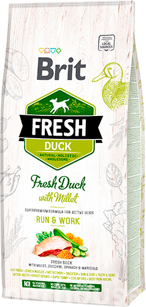

Brit Fresh Duck with Millet Adult Run & Work

Торгова марка - Brit Fresh
Країна-виробник - Чехія
Група - Сухий корм
Вік собаки - Для дорослих собак
Клас корму - Супер-преміум
Особливості потреби - Активний спосіб життя
Розмір породи - Мініатюрна, Мала, Середня, Велика і гігантська
2,5 кг
449,34 Грн
12 кг
1918.82 Грн
Oпис
Повнораціонний сухий корм із качкою, просом, цукіні, шпинатом і календулою для дорослих активних собак. Збалансований, натуральний раціон, що забезпечує улюбленцю відмінний фізичний стан при високих навантаженнях.
Чому Варто придбати?
- На 70% складається з м’яса, з яких 40% - свіже м’ясо, що повністю задовольняє потребу організму собаки в білку і тваринних жирах
- Завдяки ретельній та дбайливій обробці інгредієнтів у кормі збереглися всі корисні властивості, привабливий смак і аромат
- Збагачений вітамінами A, D3, E, С, вітамінами групи В, залізом, цинком, селеном та іншими важливими мікроелементами, які підтримують здоров’я улюбленця в гарному стані
- Містить EPA (ейкозапентаєнову кислоту) і DHA (докозагексаєнову кислоту), одні з основних компонентів нервових клітин головного мозку, які сприяють правильному функціонуванню організму та поліпшенню інтелектуальних здібностей собаки
- Комбінація таких злаків, як овес, просо та гречка в поєднанні з корисними травами, ягодами, овочами і фруктами забезпечує організм собаки достатньою енергією та поживною цінністю
- Мананолігосахариди, фруктоолігосахариди, пробіотик, бета-глюкани та водорості, що входять до складу, мають доброчинний вплив на склад кишкової мікрофлори улюбленця й активно стимулюють роботу його щитоподібної залози
- Куряча печінка та дріжджі відрізняються високим вмістом біотину, який необхідний організму тварини для здорової шкіри, гарної шерсті, а також обміну жирів і амінокислот
- Колаген, хондроїтин та глюкозамін захищають хрящі собаки від їхнього передчасного руйнування та відіграють роль будівельного матеріалу для створення нової, здорової хрящової тканини
- L-карнітин покращує обмінні та енергетичні процеси, а L-метіонін важливий для багатьох функцій організму, включно з вироблення імунних клітин і функціонування нервової системи
- Екстракт юки Шидигера скорочує рівень азотних сполук, зменшуючи виділення шкідливих газів і неприємного запаху фекалій
- Не містить глютену, сої, кукурудзи, барвників, штучних ароматизаторів або антиоксидантів
- Відрізняється підвищеним вмістом білків і жирів